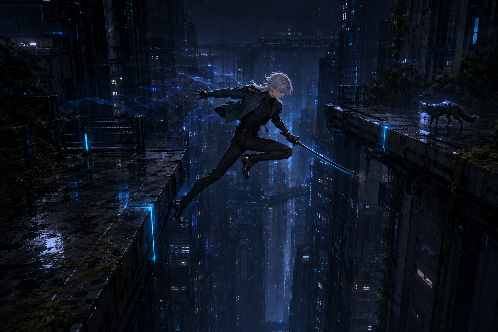
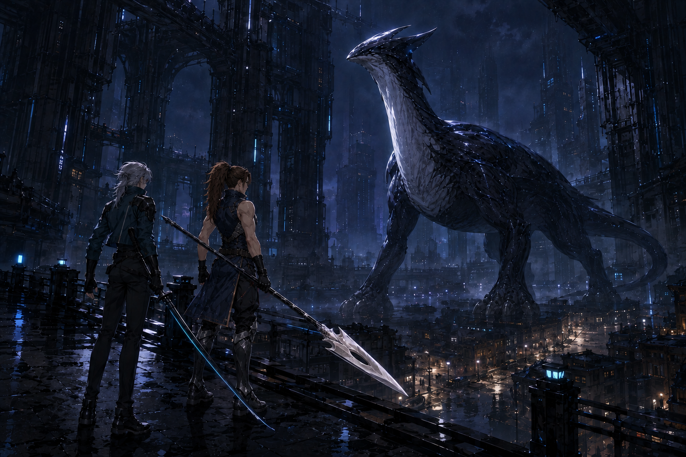
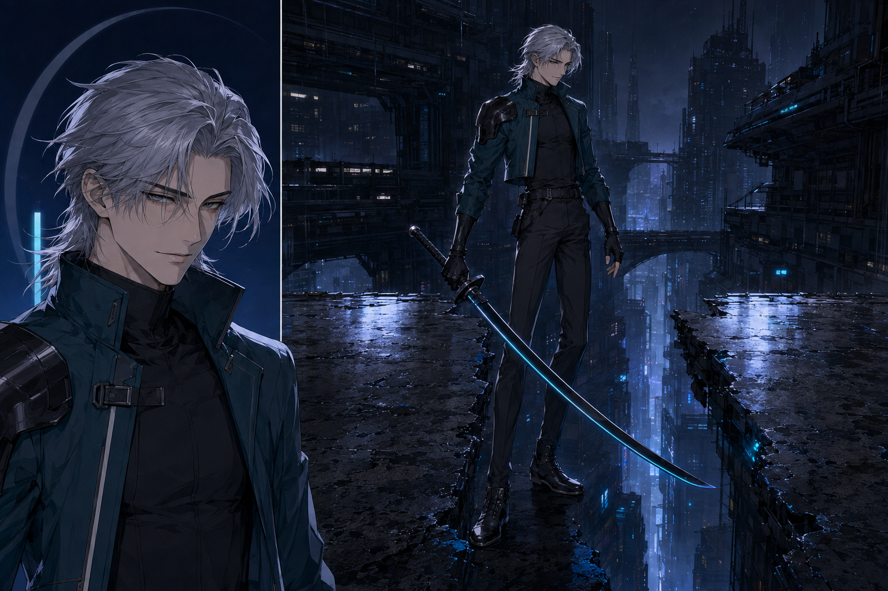
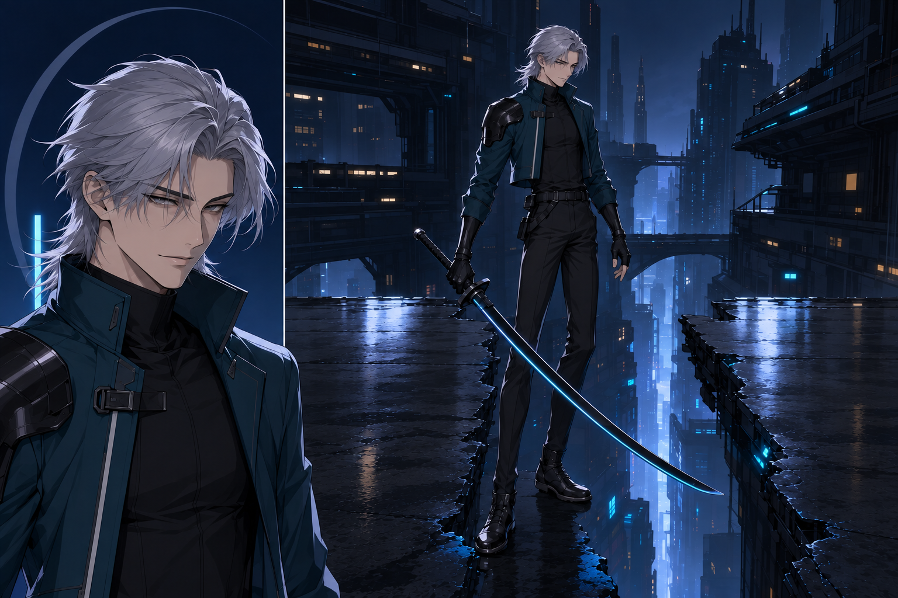
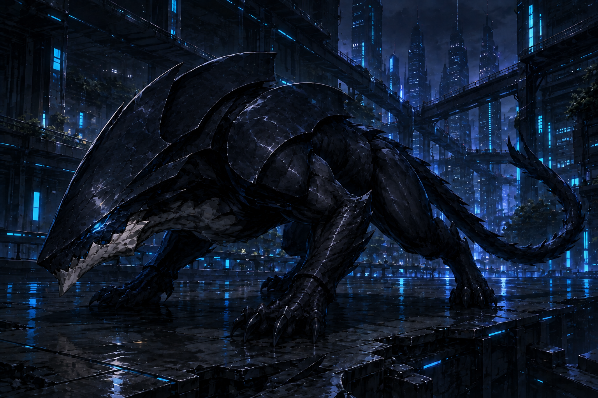
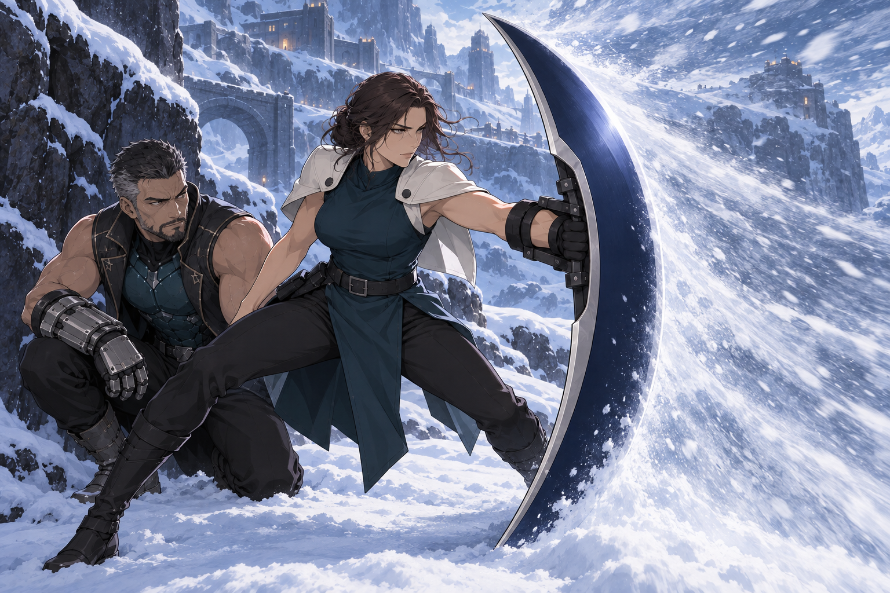
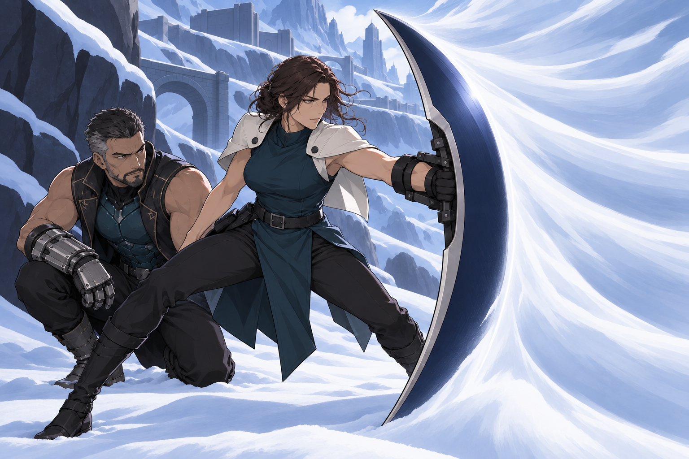

01 — Standard pass
Start here; replace the two bracketed lines.
A practical illustration finishing kit
Keep the image.
Calm the texture.
Preserve the character, atmosphere and story you love. Give the eye more room to enjoy them.
A practical guide for refining your own illustration and book-cover artwork.
Use an image editor that accepts an existing image and written editing instructions. Attach your original artwork, then paste Prompt 01 from PROMPTS.txt. Replace the two bracketed lines with what must stay and what feels too busy. Ask for one edited image. The illustrated offline guide has copy buttons; the text files work independently.
This kit does not process or upload your images. Its examples are earlier project illustrations showing the method. You do not need to attach these examples alongside your artwork: start with your source alone so its design and style remain the reference.
The key is a separate surface redraw once you already like the picture. Dense little scratches, chips, scales, sparkles and strands become larger, deliberate painted or drawn shapes. Faces, interesting design, depth and atmosphere remain the priority. “Make it less busy” during initial generation was less reliable in our tests.
Example filenames: `my-cover_original.png`, `my-cover_texture-pass-01.png`, `my-cover_prompt-01.txt`. Keep rejected attempts too. Saving the prompt and source makes the method reusable; it does not guarantee an identical result from another run.
| Prompt | Use it for |
|---|---|
| 01 — Standard pass | A strong image with distracting surface detail; start here |
| 02 — Gentle pass | A picture that needs only a little relief |
| 03 — Strong pass | Persistent, dense texture across the picture |
| 04 — Faces, hair and clothing | Keep the exact character while grouping strands and folds |
| 05 — Places and architecture | Keep a rich setting with quieter surfaces and lighting clusters |
| 06 — Creatures | Preserve anatomy and material while reducing repetitive scales or fur |
| 07 — Weapons and armor | Preserve construction, grip and wearability |
| 08 — Magic and weather | Replace particle swarms with clear directional shapes |
| 09 — Book-cover artwork | Preserve vertical composition and existing space for lettering |
| 10 — Recover from over-smoothing | Restart from the original when a pass became bland or plastic |
These ten reusable prompts are adaptations of the tested method, written for this guide. They have not all been independently image-tested, and have not yet been tested on your source images. The five files in `exact-tested-prompts/` are the original, unedited instructions that produced the example results.
Aim for quieter interiors of shapes, with selective crisp detail where it matters. Keep the eyelids and mouth expressive, important seams legible, and the edge of a blade clear. Cloth, stone, fur, glass and metal should still feel different. Architecture should still explain the place; distant figures or windows may be essential to scale.
The result should not look blurred, airbrushed, rubbery or emptied out. Painterly brushwork, paper texture and decorative motifs can be intentional features of your style. Protect those explicitly rather than asking to erase all texture. “Strong” means more grouping of distracting marks, not less personality.
Use Prompt 09 on the illustration layer when possible. Preserve the existing crop, subject placement and title space. Keep the original title, author name and other typography in your layout file and reapply those unchanged after the art pass; generated redraws cannot be relied upon to preserve exact lettering in a flattened cover.
If all you have is a flattened cover, preserve it and obtain or separate its art and lettering before treating the redraw as a final cover. This guide refines artwork; it does not establish final print dimensions, bleed or a finished wrap layout. A new title zone or a different crop is a separate composition decision. Do not ask for it accidentally while cleaning texture.
For an existing series, use each cover's own original and the same core wording plus a short list of its protected features. Compare the covers together before accepting the treatment across the series. The Black Petal cover kit remains a separate preserved reference; this method can be applied to your own art without adopting its characters or palette.
The owner strongly endorsed the overall texture change on September 8, 2026. That is a preference for the process, not a guarantee that every detail or future result will be liked. Another repair in the round reduced texture but failed to correct shield mechanics: surface improvement does not establish correct construction. Fix structural problems as a separate task.
Can you recognize the same person, place and story immediately? Does the eye find the focal subject more easily? Are the hands, equipment and creature limbs still sound? Is there still depth and a distinction between materials? Does the small cover look inviting, and does the full-size art still reward looking closely? If the texture improved but something you loved disappeared, keep the original and narrow the next attempt.
Attach your own original to your image editor. Choose one prompt. Replace the bracketed instructions; use the book-cover prompt on art without lettering. These are new reusable adaptations of the tested method.
Start here; replace the two bracketed lines.
For a picture that is already close.
For dense texture across many surfaces.
Protect identity while simplifying strands and folds.
Keep an inhabited world with calmer surfaces.
For wildlife, companions and monsters.
For equipment whose design already works.
For readable action without particle storms.
Use on the art layer; keep typography in your layout.
Reattach the ORIGINAL, not the over-smoothed result.
Original native files, copied unchanged from the completed experiment. Each pair uses the before image as its sole edit reference. Open either image to inspect it at full size.
Broader paving reflections and calmer façades preserve the city’s depth.

Reduced crack mosaics inside armor leave the enormous encounter readable.

Grouped hair, cloth and background marks preserve the face and stance.


Broader dark plates reduce glitter. Some texture remains at the jaw and ground.

A substantial reduction in snow flecks; the flowing weather becomes more stylized.

